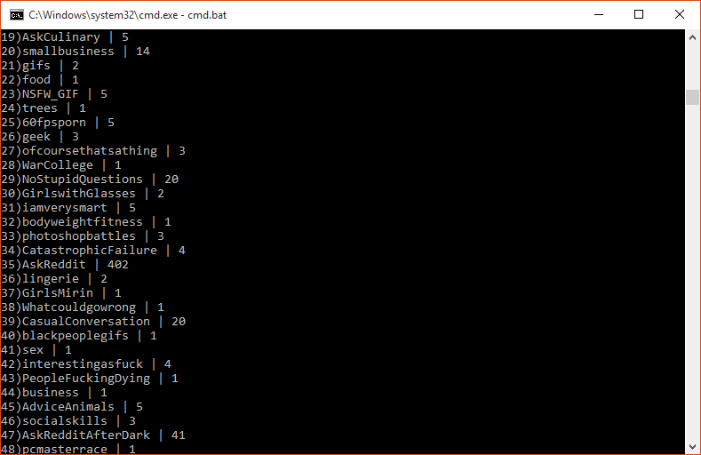

Reddit Comment Scraper
The 'Why'
When planning for my Estate Sale business, I spent a lot of time reading through the
smallbusiness subreddit. I would find some comments that were absolute gold; super good advice. However, when looking for more advice from these users, sometimes they would have dozens of pages of comments in non-business related subreddits. Rather than "searching for a needle in a haystack" by hand, I simply wrote this scraper.
The 'How'
A python script, utilizing
BeautifulSoup4 for HTML parsing. Upon initialization, the user is prompted for the reddit account to scrape the comments of. The script then pulls in all of their comments, and presents the user with a list of subreddits that comments were found in, as well as the tally of comments in that subreddit. User inputs a listing of which subreddit comments they are interested in, and the script prints all of these comments to a local file for the user to peruse.
The Output
Click here to view an example HTML file outputted by the script. The comments include a link to delete them from the page, so the user can save the page with all of the unhelpful comments pruned out. Also, there is zebra-striping for comments in different subreddits. Below you can view a screenshot of the script outputting the list of subreddits that the chosen user's comments are in. Notice how subreddits #20 and #44 are the only ones which appear to have information relevant to my interests.

The Code
Click here to view the scraper code.
Assumptions & Known Shortcomings
The script outputs the results file into the local directory, with the filename being the username whose comments were scraped. This could be updated to prompt the user for a filename but this script suits my needs as is.